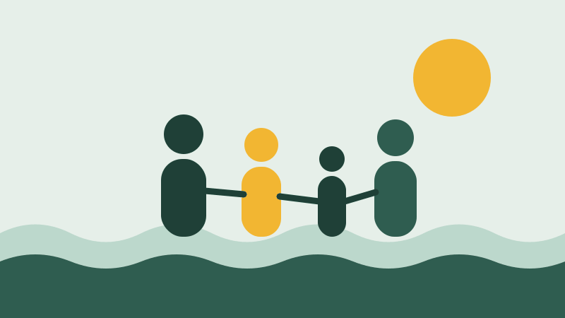

Doando seu tempo
Uma manhã por semana já faz diferença. Você escolhe a área e o horário no cadastro.
A ONG começou com um grupo de vizinhos do Ibura que se juntou para dar aula de reforço para as crianças da rua durante as férias. A ideia cresceu, outras pessoas foram chegando e hoje temos três frentes de trabalho fixas.
Não recebemos dinheiro de partido político. Nosso custo é coberto por doações de pessoas físicas, parcerias com comércios locais e um edital municipal por ano.

320 crianças atendidas no reforço em 2025
1.400 refeições servidas por mês
85 voluntários ativos
A Cozinha da Comunidade cresceu mês a mês com a chegada de novos voluntários e doadores.
| Mês | Refeições |
|---|---|
| Janeiro | 1.180 |
| Fevereiro | 1.210 |
| Março | 1.260 |
| Abril | 1.300 |
| Maio | 1.330 |
| Junho | 1.370 |
| Julho | 1.410 |
| Agosto | 1.390 |
| Setembro | 1.430 |
| Outubro | 1.460 |
| Novembro | 1.480 |
| Dezembro | 1.520 |
Uma manhã por semana já faz diferença. Você escolhe a área e o horário no cadastro.
Recebemos alimentos não perecíveis na sede de segunda a sexta, das 8h às 17h.
Compartilhe nossos projetos com amigos, na igreja, no trabalho ou no grupo da família.